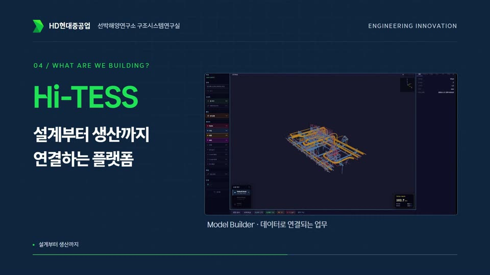
1:00HiTESS 소개 · 처음이라면 이것부터
엔지니어링 혁신: 설계부터 생산까지
왜 지금 조선 산업에 디지털 엔지니어링이 필요한지, Hi-TESS가 설계와 해석, 생산을 어떻게 잇는지 1분에 담았습니다.
Workbench News
26년 11월호통합 3호
소리와 자막이 함께 나옵니다 · 아래에서 글로도 읽을 수 있습니다
사내 R&D News 소개 이후 Workbench를 쓰는 사람이 꾸준히 늘어, 가입자가 200명을 넘었습니다.
함께 써 주시고 의견을 보내 주신 모든 분께 감사드립니다. 이번 호에서는 Workbench 안에서 볼 수 있게 된 HiTESS Story 영상과 6월 이후 새로 열린 앱, 그리고 Studio 사용 설명서를 소개합니다. 매일 쓰는 화면에서 달라진 점도 함께 모았습니다.
구조시스템연구실
Hi-TESS가 무엇이고 각 앱이 어떤 일을 하는지 1분 남짓한 영상으로 봅니다. 처음 오신 분은 맨 앞 소개 영상부터 보시길 권합니다.

1:00HiTESS 소개 · 처음이라면 이것부터
왜 지금 조선 산업에 디지털 엔지니어링이 필요한지, Hi-TESS가 설계와 해석, 생산을 어떻게 잇는지 1분에 담았습니다.
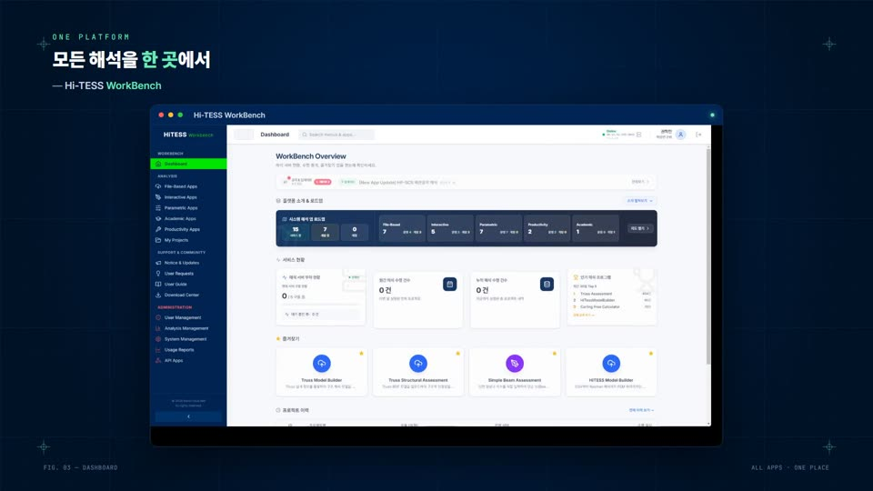
1:00차세대 조선해양 구조 해석 플랫폼
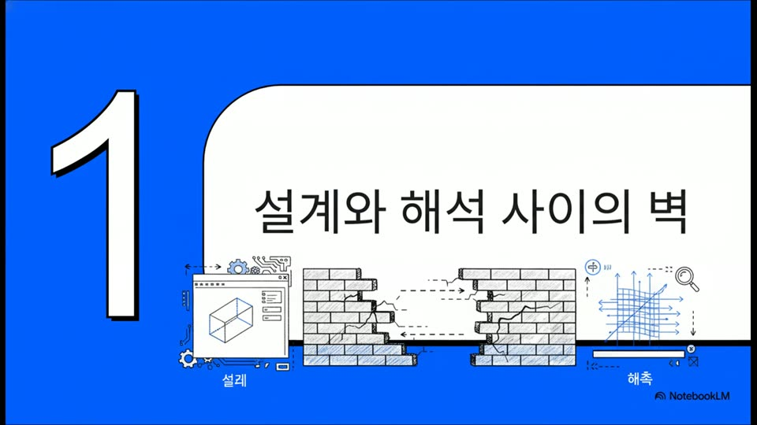
6:17설계 데이터에서 해석·생산까지 이어지는 업무 흐름
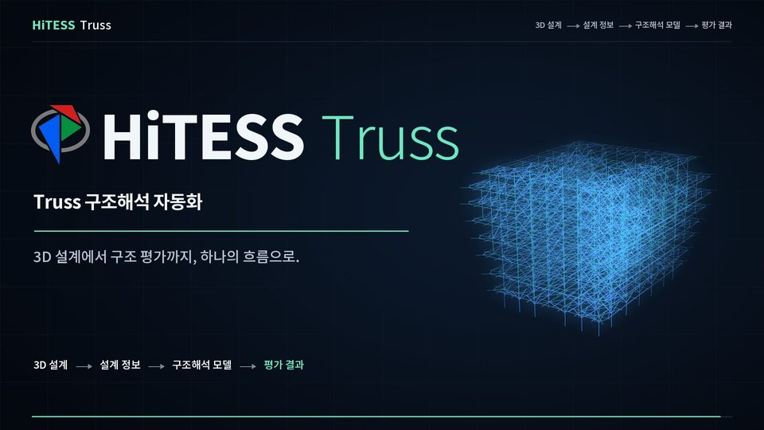
1:00트러스 모델 생성부터 구조 평가까지
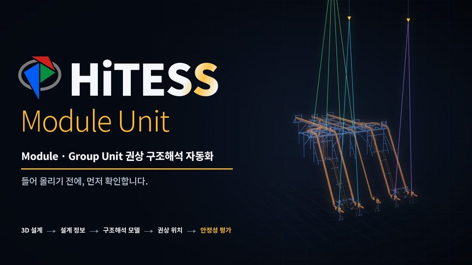
1:00권상 위치 선정과 구조 검토
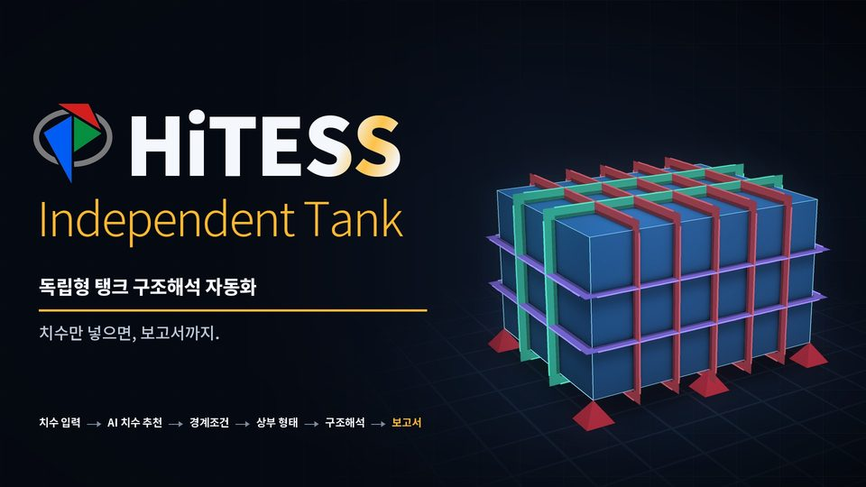
1:00독립형 탱크 구조 검토
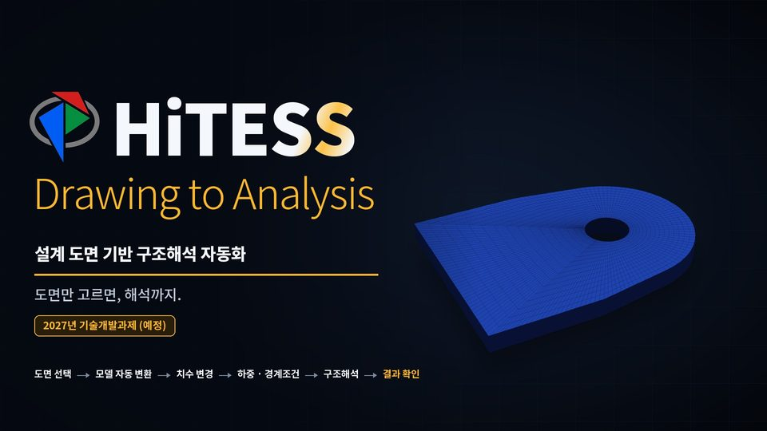
1:00도면에서 구조 해석 모델까지
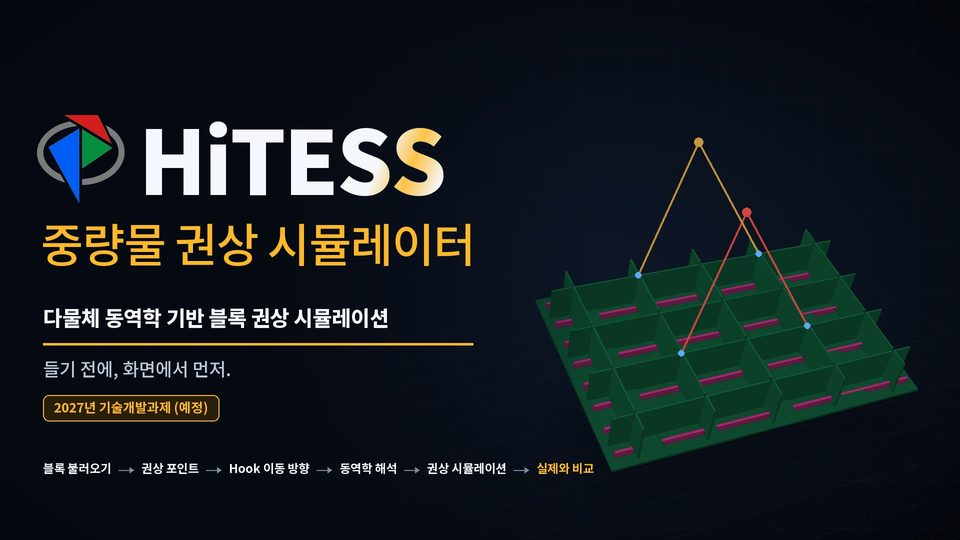
1:00중량물 권상 과정을 미리 시뮬레이션
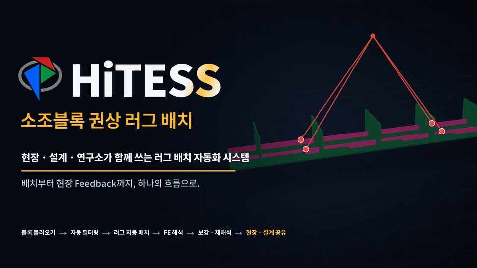
1:30권상 러그 위치를 자동으로 배치
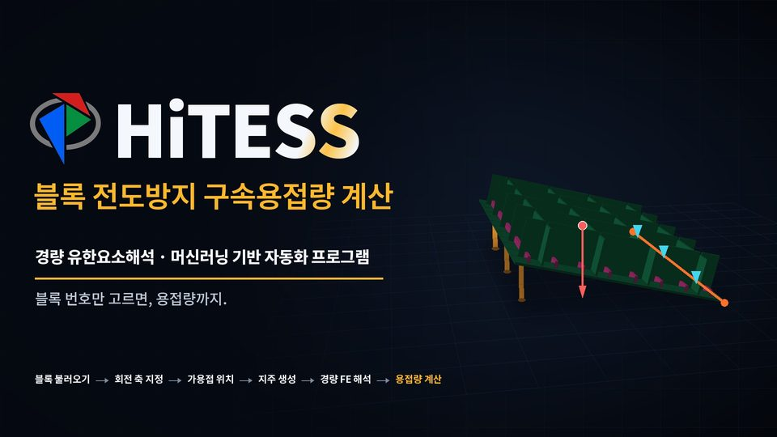
1:00전도 방지에 필요한 구속 용접량을 자동 계산
영상은 사내 자료라 Workbench 앱 안의 전용 창에서만 재생됩니다. 파일로 내려받을 수 없고, 화면 녹화·캡처·화면 공유에는 검게 나옵니다.
6월 이후 Workbench에서 바로 실행할 수 있게 된 앱입니다. 앱 목록에서 이름으로 찾으면 됩니다.
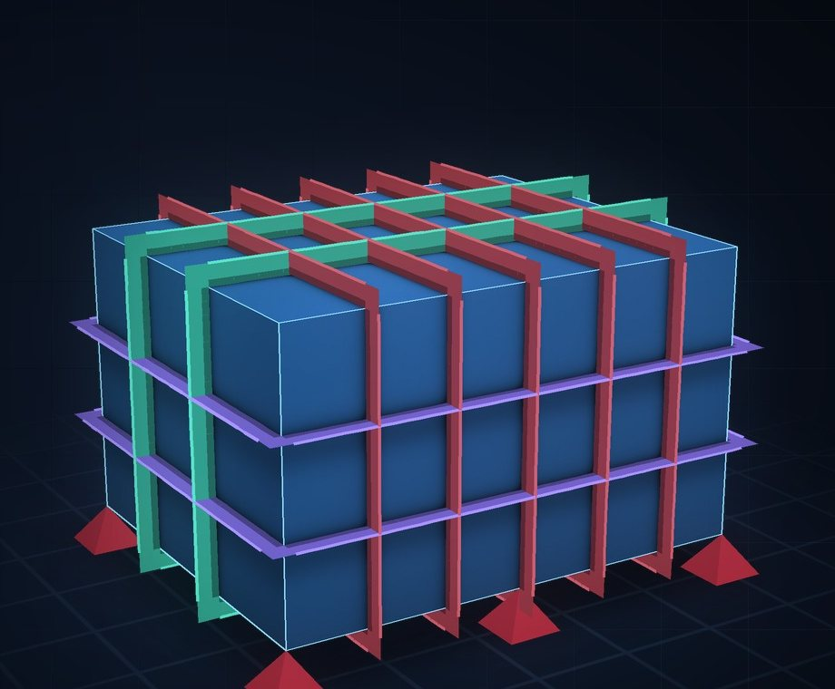
의장 단독형(독립형) 탱크의 구조 평가를 치수 입력부터 보고서까지 한 흐름으로 진행합니다. 치수를 넣으면 보강 치수를 추천받고, 경계조건과 상부 형태를 정해 구조 해석을 돌린 뒤 보고서로 받습니다.
개발 김한별 책임연구원
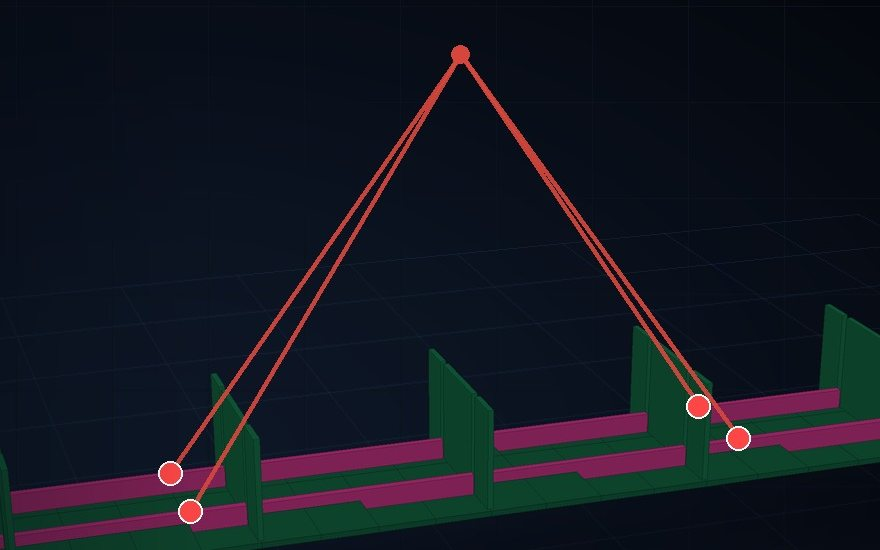
소조블록의 권상 러그 위치를 자동으로 배치하고 구조강도를 평가합니다. 현장·설계·연구소가 같은 배치 결과를 보고, 보강 후 재해석과 현장 의견까지 한 흐름으로 이어집니다.
개발 김한별 책임연구원
Trim & Stability Booklet PDF를 올리면 선박 제원과 Loading Condition을 읽어 선급 Rule 기준 선체 가속도를 계산합니다.
개발 정병훈 책임연구원
3D 모델을 확인하고 고치는 Studio 두 곳의 설명서가 나왔습니다. 설명서는 Studio 안에서 3D 옆에 열려서, 읽으면서 바로 따라 할 수 있습니다.
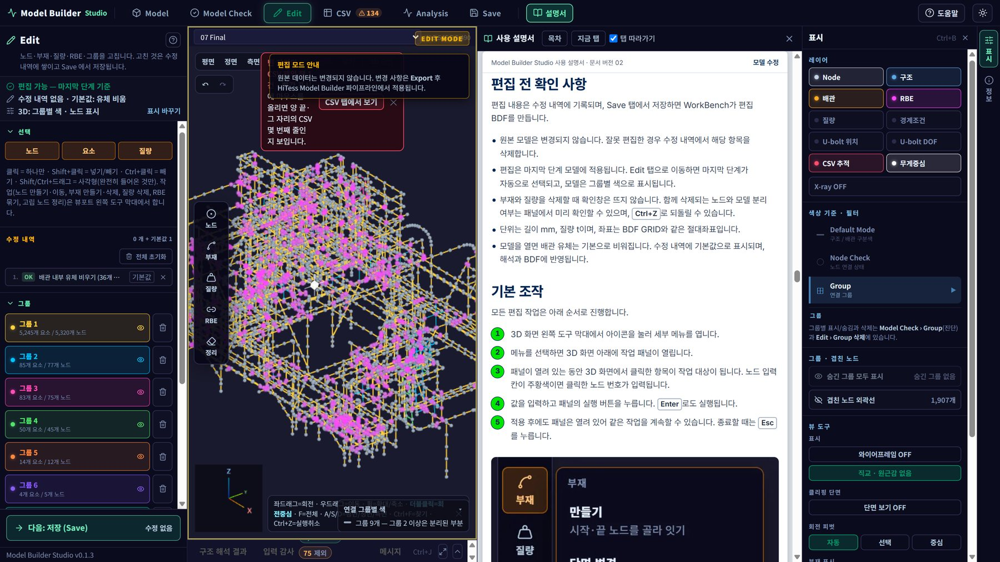
HiTESS Model Builder 앱에서 엽니다
Group & Module Unit 권상 구조 해석 앱에서 엽니다
상단 탭 줄 바로 뒤 설명서 버튼. '탭 따라가기'를 켜 두면 탭을 옮길 때 설명서도 그 쪽으로 넘어갑니다.
Workbench 앱 상단 'Studio 사용 설명서' 버튼으로 미리 읽거나 PDF로 받아 둡니다.
Studio 상단 '도움말'에서 따라하기, 단축키, 기능 찾기를 봅니다. F1을 누르고 버튼을 가리키면 그 버튼의 설명이 뜹니다.
개발 권혁민 책임연구원
앱을 가리지 않고 매일 쓰는 화면에서 달라진 점입니다.
대시보드 '새 해석 시작'에 입력 파일을 끌어다 놓으면 맞는 앱을 추천합니다. 앱을 고르면 파일을 들고 그 앱으로 넘어가 바로 실행합니다.
대시보드 › 새 해석 시작최근 해석이 판정과 함께 한 줄씩 보이고, 누르면 그 결과 화면이 그대로 다시 열립니다. 아직 확인하지 않은 실패는 눈에 띄게 따로 알려 줍니다.
대시보드 › 내 작업입력 → 실행 → 판정 → 다음 할 일 순서와 판정 표시(통과 · 검토 필요 · 실패)를 앱마다 같게 맞췄습니다. 첫 화면에서 지난 실행의 입력을 다시 불러올 수 있습니다.
Model Builder · 권상 · Truss 등 파일 기반 앱작업 탭을 최대 4개까지 열어 모델마다 따로 진행합니다. 탭마다 Studio 창도 따로 열립니다.
HiTESS Model Builder · Group & Module Unit 권상해석이 끝나면 상단 종 아이콘에 알림이 쌓이고, Workbench 창이 뒤에 있으면 Windows 알림으로도 뜹니다. 잘못 넣은 해석은 실행 중에 중단할 수 있습니다.
상단 종 아이콘 · 진행 중 작업 카드해석 파일은 30일 뒤 정리되는데, 필요한 결과는 30일·90일 연장(최대 180일)하거나 고정해 지워지지 않게 둘 수 있습니다. 즐겨찾기와 최근 앱은 PC를 바꿔도 따라옵니다.
My Projects › 해석 상세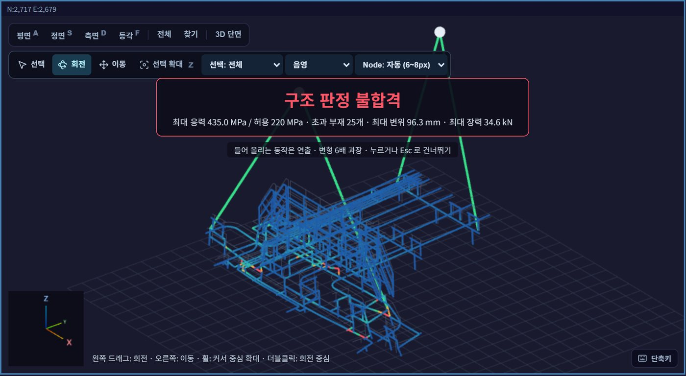
Module Unit 권상 Studio는 구조 해석이 끝나면 모델을 들어 올리는 장면과 함께 판정과 핵심 숫자(최대 응력, 초과 부재 수, 최대 변위, 최대 장력)를 먼저 보여 줍니다.
해석이 연결 끊김으로 실패하면 Nastran이 지목한 절점으로 화면을 옮겨 어디를 고쳐야 하는지 보여 줍니다.